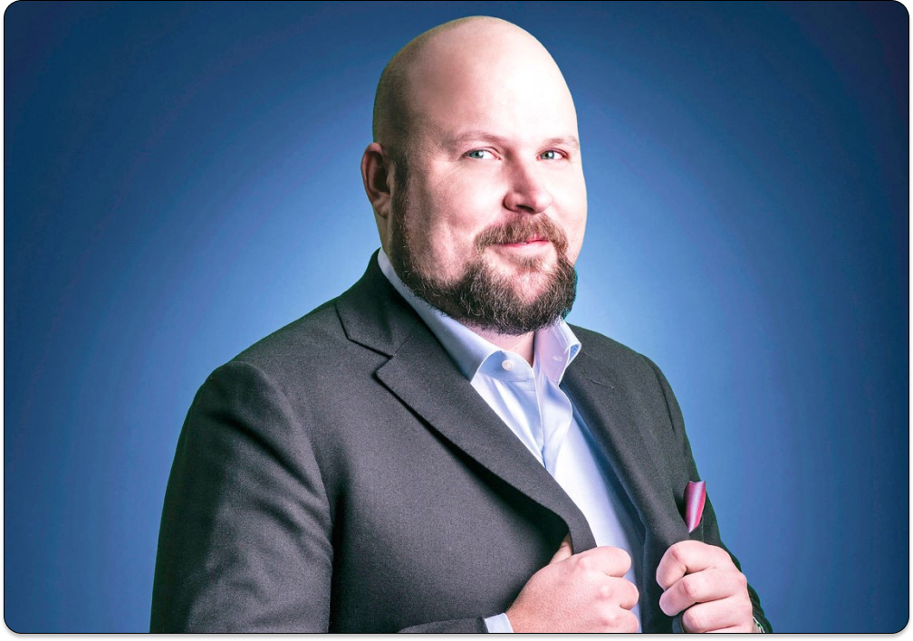

сегодня вы узнаете
популярные контент мейкеры
Маркус Алексей Перссон
Дата рождения: 1 июня 1979г
Место: Стокгольм,Швеция
Родители:Биргер Перссон,Ритва Перссон
Pод деятельности: программист
бывший владелец компании Mojang Studios.
на данный момет,игра Minecraft пренадлежит компании Microsoft с 2014 года,вместе со студией Mojang AB за 2,5млдр долларов
Изначально игра была выпущена 10 мая 2009
в фазу официального релиза Minecraft вошла 18 ноября 2011
Minicraft была разработана автором Маркусом Перссоном на языке программирования Java за двое суток в рамках хакатона Ludum Dare, условия которого состояли в том, чтобы разработчик создал игру за определённое время на основе темы, выбранной путём голосования до начала конкурса.
Процесс игры заключается в выживании в созданных игроками условиях. Необходимо постоянно защищаться или прятаться от внешних угроз, проникающих в виртуальный мир. Проект примечателен еще и самостоятельной раскруткой самими разработчиками, без привлечения издательств.